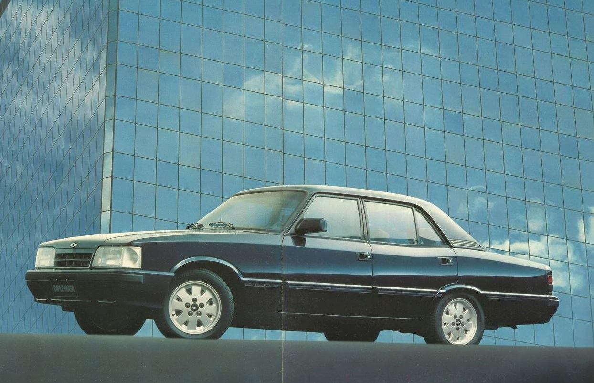

Linha do Tempo do Opala
Confira os principais marcos da história do Chevrolet Opala no Brasil:
-
1968 - Lançamento oficial no Salão do Automóvel de São Paulo.
-
1972 - Primeira grande reestilização, com novidades no design.

-
1975 - Chegada da versão esportiva SS, marcando época.

-
1980 - Modelos Diplomata e Comodoro ganham destaque.

-
1992 - Último ano de produção do Opala no Brasil.
